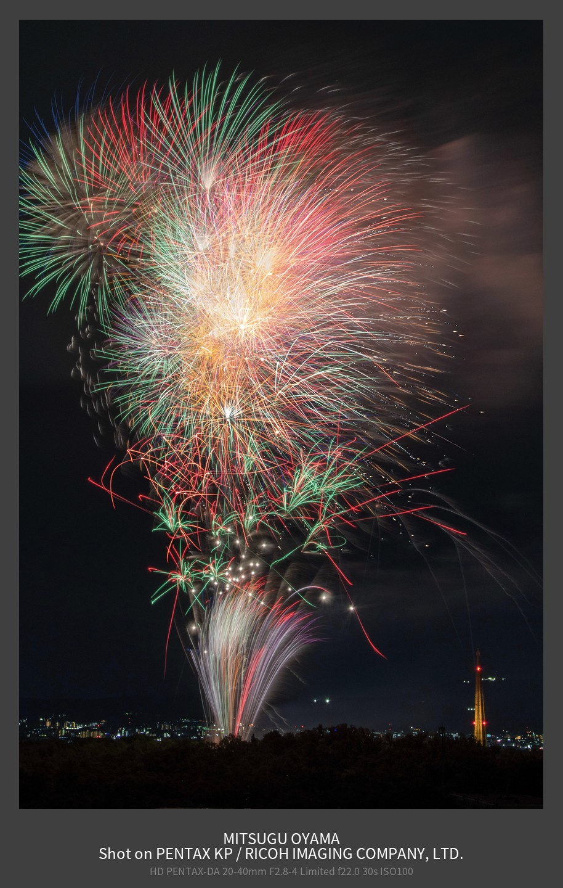
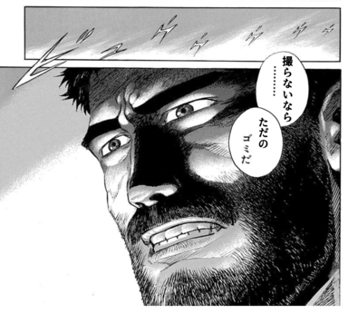

07 月 30 日 ( 火 )
Orz の花火の撮り方
はじめに
毎年 8 月 8 日に大阪府茨木市の飛龍山冥應寺で茨木辯天花火大会が開かれます。辯天宗と地域の合同の花火大会です。茨木市にお世話になって 50 年、これまでこの花火大会をきちんと写真に残してないので残したいと思い (ベランダから見えていたエキスポタワーを一切記録してないことを悔やんでいることと、なにより残りの人生も少ないことですし)、撮影することにしました。
それで昨年の 2023 年 8 月 8 日に撮影して SNS とかにもアップしているのが下の画像です。
すごいとかきれいだとかの感想を頂いて嬉しいのですが、実はこの画像は同じアングルの 3 枚の画像を比較明合成しています。※なおリンク先は SILKYPIX のサイトですが比較明合成は GIMP でもできます。
上の画像もそうですが冥應寺から 1km ほど離れた自宅のベランダから撮影しています。比較明合成もトリミングも一切せずに撮影すると下のような画像が得られます。念の為書いておくと、一応画像として悪くはないものをチョイスしています。 こういった画像を 3 枚程度チョイスして比較明合成し、最終的にトリミングして仕上げているわけです。 それでここからが本題ですが、これらの画像を撮るときの使用機材とカメラの設定についてざっと書いていきます。 自分は以下の機材で自宅のベランダから花火を撮影しています。 待機状態の画像が下の画像です。スマホの方は動画撮影用です。画像から機材が多い！！という印象を受けるかもしれませんが、それは三脚が 2 つ並んでいるからです。スチール撮影だけだとスマホ用の三脚が 1 本減るので、かなりシンプルな機材構成になります。 カメラボディとレンズは当然ですが、花火撮影では長時間露光を行いますので、ケーブルスイッチ、三脚は絶対に必要です。無いとお手上げです。 また ND 4 フィルターを使用機材に入れています。これは花火自体が光源であるために普通に撮ってしまうと白飛びしてしまい色が出ないこと、また下のような最後のクライマックスやスターマインを撮るときに ND フィルターがないと F22 あるいは F32 まで絞っても露出がオーバーして白飛びしてしまうからです。下の画像もこれでも白飛び気味なので ND 8 フィルターが必要かもと考えています。 シャッタースピードを早くすればいいじゃんという人もいるかもしれません。下のような画像が撮れれば十分と思うのならそうしてください。誰も怒ったりしません。私は実際の花火体験のダイナミックさが失われてすごく嫌ですけど。 それでは実際の撮影データを見ていきましょう。 フォーカスはオート・フォーカスではなくマニュアル・フォーカスにしています。これは花火というのは球形に広がるのでピントが合わなくなることがあること、そもそも暗くてオート・フォーカスのスピードが追従できないことが多いなどへの対処です。 花火を撮ってる最中にフォーカス調整用のモーターにウィンウィン動かれるとストレスですし、撮ってる最中の画像はほぼ間違いなく失敗写真になります。 自分は右下に写っている塔のてっぺんの航空灯にピントをいつも合わせています。そうすると経験上花火がピントから外れることがないことを知っているからです。 次にホワイトバランスですが、かなり青っぽくなるように設定しています。上の写真では 3200 ケルビンに設定していますから、昼間にこのホワイトバランスで撮影すると水中写真のように真っ青な画像になります。 なぜホワイトバランスの設定をこうしているのかというと、オートに任せたり夜景を撮るようなつもりでホワイトバランスを設定すると、花火の色がまったくでなくて悲しい、って体験をすることになるからです。ホワイトバランスをオートに任せると大抵はどんな綺麗な花火もまっ黃ぃ黃ぃになります。 もしかするとお持ちのカメラには花火専用モードが搭載されていて、花火撮影に適したホワイトバランスを設定してくれる機能があるかもしれません。その場合はそのモードをテストして使いものになるのなら、それを使ったほうが良いでしょう。 ND フィルターを使う理由は前述のとおりです。 ISO は理論上最も綺麗に画像が写る最低値をセットします。私の PENTAX KP は ISO 100 から感度設定は始まるので 100 にしています。安価なかめらだと ISO 200 スタートというものもありますが、そのときは最低の ISO 200 にセットします。 絞りですが上の画像では F8 とわりと絞りを開けています。これはこのカットを撮る前の打ち上げがスターマインでかなり明るく、あまり時間をおかずにこのカットで撮影した打ち上げが始まったので、カメラの設定をいろいろ調整する時間がなくてとりあえず絞りだけ開けて撮った次第です。 このカットの前のスターマインの撮影では、シャッタースピードは同じで、絞りは F22 まで絞っています。花火は何が上がるのかによって、それくらい、またはそれ以上に光量が変わってしまうんですね。 シャッター・スピードですが 34 秒となっています。花火を撮るにしては長いのではないか？そういった声が聞こえてきそうです。 本来であれば 10 秒露光すれば十分かもしれません。でもそれは打ち上げの瞬間を確実に捉えることができた場合です。 昔は花火の玉を打ち上げる際に出るボッという音が、1km 以上離れた我が家まで聞こえていました。1km 離れているので理論上は 3 秒はかかることになります。実際には 5、6 秒かかっていたように記憶しています。 なので仮にその音が聞こえたタイミングでシャッターを押しても、すでに花火は開いてほぼ散っている状態になっています。 そもそも今ではその音自体が聞こえてきません。理由はわかりませんが、昔は普通に我が家まで届いていた音が、いつのまにか届かなくなっています。 なので目視に頼らざるを得ないのですが、我が家のベランダからは花火を打ち上げる場所は見えません。なので目視で花火が打ち上げられたかどうかも確認できないのです。 すると取れる作戦はただ 1 つ。シャッターを開けっ放しにして花火が上がるのを待つしかありません。そのための 30 秒以上の露光時間なのです。 もう 1 つの理由としては、最近の花火では下の動画のスターマインのように、複数の花火をまとまった時間連続して打ち上げるケースが多くなっています。そうするとどうしてもシャッターを開ける時間は長くしないと、画像がしょぼくなってその時の臨場感が失われるってことになっちゃうわけです。 30 秒もシャッターを開けたら露出オーバーで白飛びするのでは？という声も聞こえてきそうです。でも心配にはおよびません。そのための F22 や F32 までの絞り込みですし ND フィルターも使います。 それに花火は破裂したら数秒で消えます。街の灯のように延々と瞬いているということがありません。光源で有り続けるのは数秒に過ぎないので、露出過多にはなりません。もちろん正しい絞りを設定することが重要なことは言うまでもありません。 正しい露出を得るためには経験が必要と言えますが、花火が打ち上げられる時間は大抵の花火大会では 1 時間程度はあります。 今はカメラはデジタルですから撮った直後に撮った画像をその場で確認することができます。なので 1 度撮ったら必ず背面液晶で結果を確認して、その結果が失敗であろうと成功であろうと次のカットの撮影に活かしましょう。この確認作業を怠ると最後まで失敗写真を量産し続けることになります。この確認作業をきちんとすれば 10 分もすれば満足の行く画像を得ることができるようになるでしょう。 この夏もお互いにがんばりましょう。機材
White Blance : 3200 Kelvin
Filter : ND 4
ISO : 100
FNumber : 32
Shutter Speed : 30s

元のサイトでも失敗と書かれていますが、ゲリラ的な打ち上げだったので、手持ちになるでしょうし、設定をする暇もなかったのだろうなと思います。自分も新型コロナ絡みでゲリラ花火に遭遇したことが何度かありますが、あれはまともに撮ることは不可能です。
こういう画像を見て笑う人は多いでしょう。でも写真を撮る者としてはダメ元でもとにかく撮るという行為は非常に重要です。撮ったという事実だけでも称賛に値します。撮りもせずに笑うのはクズです。ゴミです。羽生丈二もそう言っています。

撮影データ例
White Blance : 3200 Kelvin
Filter : ND 4
ISO : 100
FNumber : 8
Shutter Speed : 34s